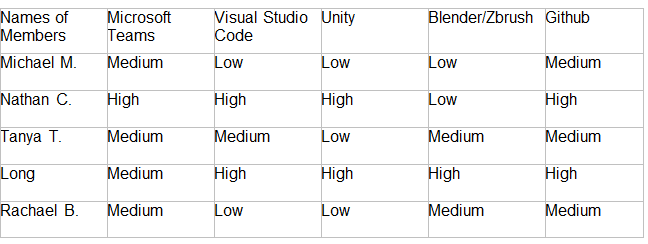

The group used a variety of tools and technologies. These included communicative technologies, as well as software technologies such as designing assets for games, coding technologies, and more. These included but were not exclusively limited to Microsoft Teams, Visual Studio Code, Unity, Blender, Zbrush and Github.
Firstly, the team used Microsoft Teams in order to collaborate and organise our efforts in the completion of each milestone as it related to the assignment parts. This included routine, weekly meetings, and it followed a flexible but well-defined schedule. All team members in advance of a day were informed of certain tasks or requests, and they needed to respond to them within that timeframe. This also extends to the familiarity each team member had with the program in knowing how it functions, and how to use it effectively. Additionally, the interactivity each team member had with the program and their communicative contributions also are included in their capacities to interact with the program within a meaningful way.
Secondly, the team used Visual Studio Code in order to code the website in HTML and CSS. This program is also being used for coding the mechanics and functional aspects of the game that is being created in Unity. Members within the team have worked together using this program in order to code up the website and allocated parts of our team will work on the Unity script programming. The team will also be using C# to code the scripts for Unity, as C# is a programming language designed exclusively for video game programming.
Thirdly, the game is going to be finalised and created within Unity. The team will work collaboratively on a shared project and will create assets, maps, characters, mechanics, and code all the necessary structures to function as a fully fleshed out game. There will also need to be a time investment in teaching the members of the team how Unity functions if as a team we are to make full use of its capabilities as a software that has the ability to create games. Assets have also been created with Unity, which means it is also a viable program other than Blender to create 3D models. However, Unity, as described below, might lack some of the tools that Blender has in order to create authentic and visually distinctive 3D models, which Blender might be more equipped to deal with.
Fourthly, some members of the team decided to create some assets within Blender, Zbrush. Blender is an open sourced, free program along with Zbrush for specialize tasks that has a variety of toolsets which can be used to create visual effects, 3D models, animations, and assets. Some members of the team will collaborate together to create unique and original assets for the purpose of being integrated and used within the game. Although a majority of assets were already created in Unity, there are some tools which are not present in Unity that some members of the team may find useful in designing and creating their own characters.
Finally, the team is using Github in order to coordinate the amalgamation of all of our work. We are using Github Desktop to push work onto the cloud and the system allows for a team to do that. The structure of how it is setup also allows for ease of updating existing files from other members, or individual work. This is because you can locally edit the files and then commit it to the designated repository through Github desktop. However, there can be merge issues or file integrity collisions if certain members of the team push their work simultaneously, or if there are different word processors used to edit something created by another word processor.
The following table below illustrates the corresponding proficiencies with each medium:
